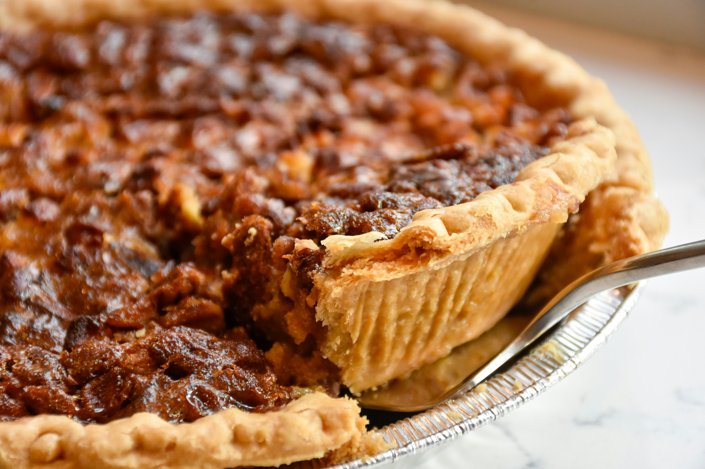

French meat pie
This tourtière recipe makes a hearty, satisfying French-Canadian meat pie that's easy to prepare, so it's a great choice for a holiday main course. Visually impressive, relatively affordable, and best served at room temperature, tourtière doesn't require any precise timing.

This French Canadian meat pie (tourtière) contains pork, potatoes, onions, and spices.
- 1 large baking potato
- 1 ½ pounds ground pork
- 1 large onion, minced
- ½ teaspoon salt
- ½ teaspoon ground black pepper
- ½ teaspoon ground cinnamon
- ¼ teaspoon ground cloves
- 1 pinch ground allspice
- ½ cup water
- 1 (14.1 ounce) package double-crust pie pastry, thawed
- 1 large egg, beaten
- ¼ teaspoon paprika, or to taste
Directions
- Gather all ingredients.
- Preheat the oven to 450 degrees F (230 degrees C).
- Prick potato several times with a fork and place onto a baking sheet.
- Bake in the preheated oven until easily pierced with a fork, 50 minutes to 1 hour. Let cool for 10 minutes, then discard skin and mash flesh. Turn the oven off.
- Place mashed potato into a large skillet with ground pork, onion, water, pepper, cinnamon, cloves, and allpsice. Bring to a boil, then reduce the heat and simmer until very thick, at least 1 hour.
- Preheat the oven to 350 degrees F (175 degrees C).
- Line a deep-dish pie plate with one pastry. Spoon in pork and potato filling.
- Cover with remaining pastry. Brush with beaten egg and sprinkle with paprika. Cut a steam vent in pastry.
- Bake in the preheated oven for 50 minutes. If the edges brown too fast, cover them with a strip of foil. Serve warm.